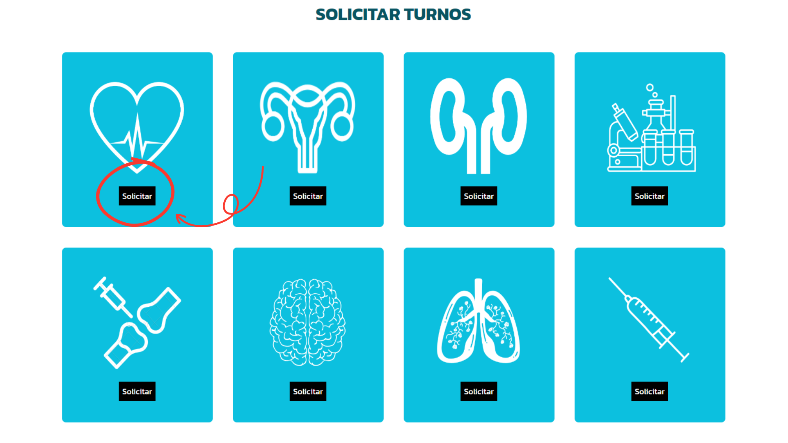
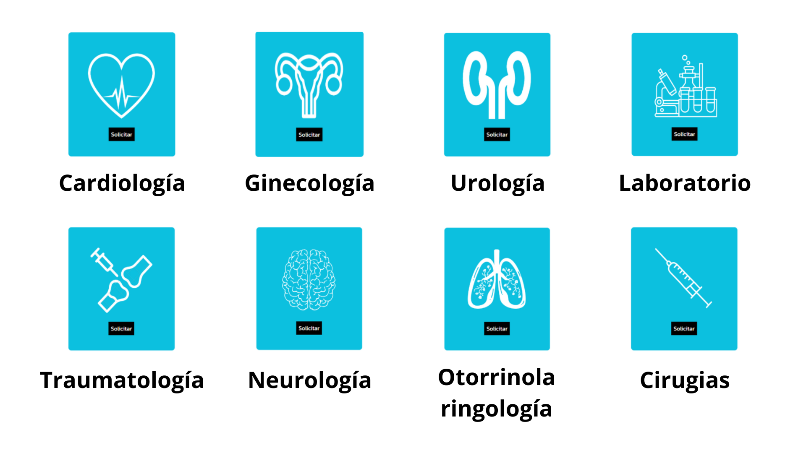
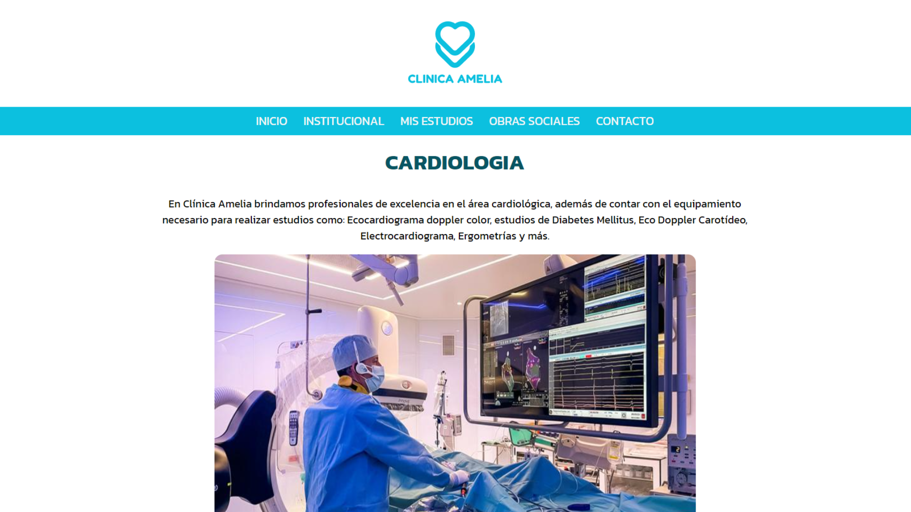
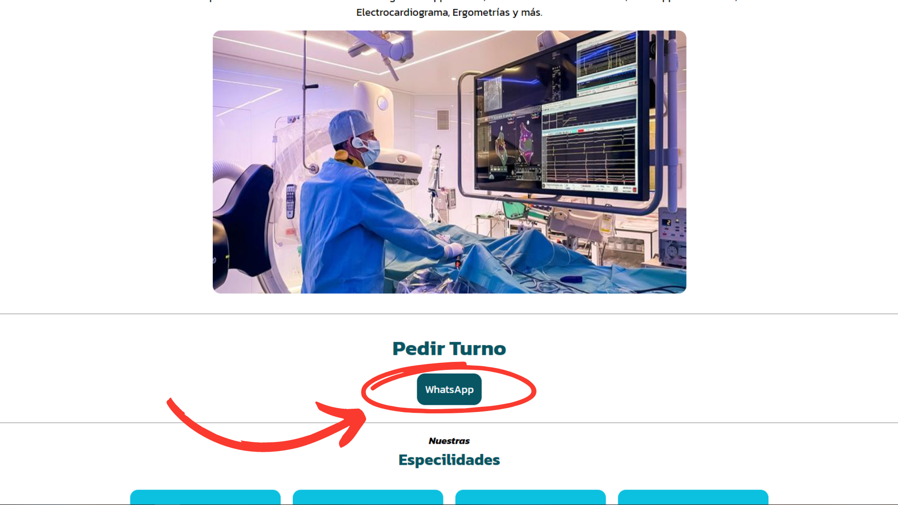

Para poder sacar un turno de manera onine para ser atendido en la Clinica Amelia es tan sencio como seguir una serie de pasos totalmente sencillos para que asi puedas reservar tu turno de manera mucho mas simplificada
Preguntas Frecuentes
No es totalmente obligatorio sacar unicamente turno via online. Sin embargo, nosotros de esta manera podemos optimizar nuestro sistema de agendado de turnos
haciendo asi que, de manera presencial, no haya tiempos de espera ni perdidas de tiempo para nuestros pacientes.
Usted va a poder hablar con un Bot (programa informático que efectúa automáticamente tareas reiterativas mediante Internet a través de una cadena de comandos o funciones autónomas previas para asignar un rol establecido)
via WhatsApp para poder sacar su turno correspondiente, especificando tambien su especialidad, horario, fecha y mas. A continuacion se explicara aun mejor como es este sistema.
!Al contrario¡. Usted puede seguir sacando turno de manera presencial en cualquiera de nuestros puntos medicos, de la manera tradicional que ya conocemos.
Pasos a seguir para sacar turno de manera online
1. Ingresar a la especialidad que nececites

Primero debe ingresar a nuestra Pagina Principal para posteriormente ir al apartado de Especialidades.
Una vez clike ahi, sera redirigido a un apartado de la misma pagina en donde dice "Solicitar Turno", y ahi encontrara las 8 especialidades
que se trabajan en nuestra clinica.

2. Ingrese al chat de WhatsApp

Una vez ingresado en la especialiad en la que usted requiere sacar un turno, va a poder observar, primero, una breve descripcion de la que se brinda en dicha especialidad.
Posteriormente, mas aba a la hora de escrolear, va a poder observar un apartado que dice "Pedir Turno", ahi es donde usted debera clickear para que sea
redirigido autamticamente al chat de WhatsApp para poder solicitar su respectivo turno. A medida que escrolee mas abajo encontrara las especialidades del mismo departamento
como tambien los doctores/as encargados en la misma area.

3. Final, Inicialice el chat co nuestro Bot de WhatsApp
Una vez sted entre al chat de WhatsApp, debera mandarle n mensaje a nuestro bot. Posteriormente el le indicara
como seguir adelante para que pueda sacar su correspondiente turno